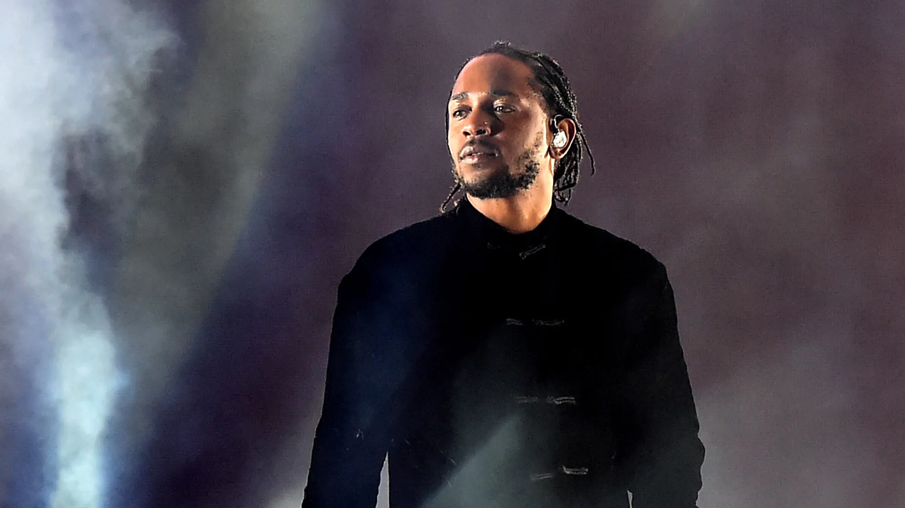

Kendrick Lamar Duckworth (born June 17, 1987) is an American rapper and songwriter. Regarded as one of the most influential hip hop artists of his generation, and one of the greatest rappers of all time, he is known for his technical artistry and complex songwriting. He was awarded the 2018 Pulitzer Prize for Music, becoming the first musician outside of the classical and jazz genres to be honored. Lamar began releasing music under the stage name K.Dot while he was attending high school. He signed with Top Dawg Entertainment (TDE) in 2005, where he co-founded the hip hop supergroup Black Hippy. Following the success of his alternative rap debut album Section.80 (2011), Lamar secured a joint contract with Dr. Dre's Aftermath Entertainment and Interscope Records. He rose to prominence with his gangsta rap-influenced second album Good Kid, M.A.A.D City (2012) and its top 40 singles "Swimming Pools (Drank)", "Poetic Justice" and "Bitch, Don't Kill My Vibe". It is the longest-charting hip hop studio album on the Billboard 200.
To Pimp a Butterfly (2015), Lamar's third album, embraced historical African-American music styles such as jazz and funk. It became his first of four consecutive number-one albums in the U.S., and was one of the most critically acclaimed albums of the 2010s. Lamar's work on the remix of Taylor Swift's "Bad Blood" garnered his first number-one song on the Billboard Hot 100. His critical and commercial success continued with his R&B and pop-leaning fourth album Damn (2017), yielding his second chart-topping single "Humble". The double album Mr. Morale & the Big Steppers (2022) concluded Lamar's tenure with TDE and Aftermath. His 2024 feud with Drake spawned the number-one songs "Like That" and "Not Like Us".
Lamar has received various accolades throughout his career, including one Primetime Emmy Award, one Brit Award, four American Music Awards, six Billboard Music Awards, 11 MTV Video Music Awards (including two Video of the Year wins), 17 Grammy Awards (the third-most won by a rapper), and 29 BET Hip Hop Awards (the most won by any artist). Time listed him as one of the 100 most influential people in the world in 2016. Two of his concert tours, the Damn Tour (2017–2018) and the Big Steppers Tour (2022–2024), are amongst the highest-grossing rap tours in history. Three of his works were included in Rolling Stone's 2020 revision of the 500 greatest albums of all time. Outside of music, Lamar co-founded the creative company PGLang and ventured into film with his creative partner, Dave Free.
Early Life
Lamar and his family lived in Section 8 housing, were reliant on welfare and food stamps, and experienced homelessness.[9][10] Although he is not a member of a particular gang, he grew up with close affiliates of the Westside Pirus.[3] Despite suffering hardships, Lamar remembered having "good memories" of his childhood that sparked his interest in hip hop music, such as sneaking into his parents' house parties.[2][11] He was raised secular, although he occasionally attended church services and was taught the Bible by his grandmother.[12] He felt "spiritually unsatisfied" as a child due to the "empty" and "one-sided" nature of the sermons.[13]
After hearing a recording of his voice for the first time, Lamar became interested in rapping.[14] He was introduced to police brutality after experiencing the first day of the 1992 Los Angeles riots.[2] When he was five years old, he witnessed a murder for the first time while sitting outside of his apartment unit, as a teenage drug dealer was killed in a drive-by shooting.[2] "It done [sic] something to me right then and there," Lamar later admitted to NPR Music. "It let me know that this is not only something that I'm looking at, but it's something that maybe I have to get used to."[15] His parents nicknamed him "Man-Man" due to his precocious behavior, although he confessed it "put a stigma on the idea of me reacting as a kid sometimes—I would hurt myself and they would expect me not to cry."[16]
In school, Lamar was a quiet and observant student who excelled academically and had a noticeable stutter.[17] His first grade teacher at Robert E. McNair Elementary School encouraged him to become a writer after she heard him correctly use the word “audacity".[18] As a seventh grade student at Vanguard Learning Center, Lamar was introduced to poetry by his English teacher, Regis Inge.[19] Inge integrated the literary form into his curriculum as a response to the growing racial tensions amongst his students.[19] Through its connection to hip hop, Lamar studied rhymes, metaphors and double entendres, which made him fall in love with songwriting: "You can put all your feelings down on a sheet of paper, and they'd make sense to you. I liked that."[2][19] Instead of completing assignments for other classes, Lamar would scribe lyrics in his notebooks.[19] His initial writing was entirely profane, but it helped him manage his psychological trauma and depression, which he struggled with during his adolescence.[19][20] Inge played a vital role in his intellectual growth, often critiquing his lexicon and suggesting prompts to strengthen his prose.
Lamar later attended Centennial High School.[21] He was enrolled in summer school during the tenth grade, which he dreaded because it forced him to be embroiled in a gang war.[21] Despite his efforts to avoid them, Lamar soon became heavily involved with Compton's hedonistic gang culture, which led to numerous health scares and encounters with the police.[2] He distanced himself from the lifestyle following an intervention staged by his father.[5] When he was 16, he was baptized and converted to Christianity following the death of a friend.[22][23] Lamar entered a lasting romantic relationship with his high school sweetheart, Whitney Alford.[24] His sexual addiction and repeated infidelity caused numerous difficulties within their on-and-off relationship.[25] Lamar graduated from Centennial High School in 2005 as a straight-A student.[26][27] He flirted with the idea of studying psychology and astronomy in college, but suspended his academic pursuits to focus on his music career.[2][28]

2003–2008: Career beginnings
During high school, Lamar adopted the stage name K.Dot and began freestyling and battle rapping at school.[1] His performances caught the attention of fellow student Dave Free, who traveled from Inglewood to watch him rap.[1] They quickly formed a friendship over their love of hip hop and the television sitcom Martin.[1] They recorded music together at Free's makeshift garage studio and at his older brother's Hyde Park apartment.[1] Lamar's earliest performances were held at a "super hood" comedy club and behind a tattoo parlor.[1] Free was his hype man during that time, while his older brother was his manager and disc jockey.[1] Lamar recorded five mixtapes throughout the 2000s; his first, Youngest Head Nigga in Charge (Hub City Threat: Minor of the Year), was released on April 15, 2003, through Konkrete Jungle Musik.[29] The mixtapes primarily consisted of freestyles over the production of popular hip hop songs.
In a series of retrospective reviews for Rolling Stone, Mosi Reeves complimented Lamar's "unerring" sense of rhythm and timing found in Hub City Threat: Minor of the Year, but criticized his "clumsy" lyricism and that his flow was "overly beholden to ... Jay-Z and Lil Wayne".[29] Free, who was working as a computer technician, introduced the mixtape to record producer Anthony "Top Dawg" Tiffith while attempting to repair his computer.[30] Tiffith was impressed with Lamar's burgeoning abilities and invited him to partake in an audition process for entry into his newly established independent record label, Top Dawg Entertainment (TDE).[30] During his audition, Lamar freestyled for Tiffith and record executive Terrence "Punch" Henderson for two hours, a strategy that impressed Henderson but bewildered Tiffith.[5][31] He was offered a recording contract by TDE in 2005, joining Jay Rock as the label's first signings.[5] Upon signing, he purchased a minority stake in the label for an undisclosed amount.
Lamar had a brief stint as a security guard when he started working on music with Jay Rock at TDE's in-house recording studio.[32][27] The bond he formed with him, Ab-Soul and Schoolboy Q led to the formation of the hip hop supergroup, Black Hippy.[33] Lamar released his second mixtape, Training Day, on December 30, 2005.[29] Reeves complimented its varied production and "well-executed" concept, which was based on the 2001 film of the same name.[29] In 2006, Lamar signed an artist development deal with Def Jam Recordings and was featured on two singles by the Game. He also heavily contributed to Jay Rock's first two mixtapes, Watts Finest Vol. 1 and Watts Finest Vol. 2: The Nickerson Files.[16][34] Lamar was ultimately let go from Def Jam after an encounter with its president and chief executive officer, Jay-Z; he later described it as "one of those situations where I wasn’t ready."[35][36] Lamar and Jay Rock released a collaborative mixtape, title No Sleep 'til NYC, on December 24, 2007.[29] Reeves declared the project as a "fun cypher session, nothing more, nothing less."
2009–2011: Overly Dedicated and Section.80
Lamar's third mixtape C4, released on January 30, 2009, is a tribute project to Lil Wayne’s Tha Carter III (2008) and was supported by his co-sign.[37] Reeves felt that the mixtape was a "wrongheaded homage to a year-old, well-worn album."[29] From February to July, he toured with the Game on his LAX Tour as a hype man for Jay Rock.[38][39] Lamar disliked how his stage name diverted attention away from his true identity, and decided to retire it.[40] He opted to use his first and middle names professionally and regards the name change as part of his career growth."[41] For his eponymous debut extended play (2009),[42] Lamar eschewed the creative process of his mixtapes in favor of a project heavily focused on his songwriting over "lovely yet doleful" production.[29] Reeves described the EP as the "first standout project" of his career, praising its melancholic tone.[29] He felt that the project restored his reputation following the sting of criticism he received over C4.
After striking a music publishing deal with Warner/Chappell Music,[43] Lamar released his fourth mixtape, Overly Dedicated, on September 14, 2010. It was his first project to be purchased through digital retailers.[44] Reeves described Overly Dedicated as a partial "victory lap" that marked a shift in his songwriting.[29] The mixtape peaked at number 72 on Billboard's Top R&B/Hip-Hop Albums chart.[45] Lamar served as Jay Rock's hype man for a second time during Tech N9ne's Independent Grind Tour, where Overly Dedicated was introduced to Dr. Dre.[46][47] After watching the music video for the song "Ignorance Is Bliss" on YouTube, he reached out to Lamar with hopes of working with him and Snoop Dogg on his unfinished album, Detox.[46][48] He also considered signing him to his record label, Aftermath Entertainment, and was encouraged to by artists such as J. Cole.
Lamar entered a brief relationship with emcee Nitty Scott,[51][52] and was featured on XXL's 2011 Freshman Class list.[53] He released his debut studio album, Section.80, on July 2, 2011,[54] which was supported by its lead single "HiiiPower".[55] The album explored conscious and alternative hip hop styles and experimented with "stripped-down" jazz production.[56][57] Ogden Payne of Forbes considers it to be "the genesis to [Lamar] successfully balancing social commentary with mass appeal."[58] Section.80 marked Lamar's first appearance on the Billboard 200 chart, where it peaked at number 113. It sold approximately 5,000 copies in its first week of tracking, with minimal coverage from mainstream media outlets.[59] To promote the album, Lamar performed at small venues and college campuses across the U.S.[60][61] He was dubbed the "New King of the West Coast" by Snoop Dogg, Dr. Dre and the Game during a performance in West Los Angeles.[62][63] At the 2011 BET Hip Hop Awards, Section.80 was nominated for Best Mixtape.[64] Throughout the year, he appeared on the Game's The R.E.D. Album, Tech N9ne's All 6's and 7's, 9th Wonder's The Wonder Years, and Drake's Take Care.
2012–2013: Good Kid, M.A.A.D City
Lamar began planning his second album before Section.80 was released.[66] From February to April 2012, he opened for Drake on his Club Paradise Tour.[67] He began working with J. Cole on a collaborative album around that time, but nothing came to fruition; Cole later admitted the two "put it to bed years ago".[68][69] On March 8, The Fader reported that Lamar had signed a joint venture recording contract with Aftermath Entertainment and Interscope Records; under the deal, TDE continued to serve as his primary label.[70] His first commercial single, "The Recipe" featuring Dr. Dre, premiered on rhythmic crossover radio on April 2
Good Kid, M.A.A.D City, Lamar's second album and first under a major record label, was released on October 22, 2012.[72][73] He worked with producers such as Pharrell Williams, Hit-Boy, Scoop DeVille, Jack Splash, and T-Minus to create an atmospheric West Coast hip hop album with heavy gangsta rap influences.[74] Its lead single, "Swimming Pools (Drank)",[75] marked Lamar's first top 20 single on the U.S. Billboard Hot 100.[76] Its other singles, "Backseat Freestyle", "Poetic Justice", and "Bitch, Don’t Kill My Vibe", enjoyed moderate commercial success.[77][78] Good Kid, M.A.A.D City was met with widespread critical acclaim, who lauded Lamar's nonlinear songwriting and thematic scope. Greg Kot of the Chicago Tribune applauded him for giving gangsta tropes a "twist, or sometimes upend[ing] them completely" on a record that "brims with comedy, complexity and the many voices in [Lamar’s] head."[79] The album debuted at number two on the Billboard 200 with 242,000 copies sold;[80] the highest first-week album sales of the year by a male rapper.[81] Good Kid, M.A.A.D City surpassed The Eminem Show (2002) to become the longest-charting hip hop studio album on the Billboard 200.[82] In October 2022, it became the first hip hop studio album to spend over ten consecutive years on the chart
From September to October 2012, Lamar headlined the BET Music Matters Tour with Black Hippy and Stalley.[84] He won Lyricist of the Year at the 2012 BET Hip Hop Awards,[85] and was featured on ASAP Rocky’s single "Fuckin' Problems" alongside Drake and 2 Chainz, which reached the top 10 in the U.S.[86] Lamar embarked on two headlining concert tours in 2013: a national college tour with Steve Aoki and his first international tour.[87][88] He struggled with depression, survivor's guilt and suicidal ideation during promotional events upon learning of the deaths of three close friends.[89] In an interview with MTV, he confessed that "psychologically, it messes your brain up. You live in this life, you know what I'm saying, but you still have to face realities of this. I gotta get back off that tour bus and go to these funerals."[90] From October to December 2013, Lamar opened for Kanye West on his Yeezus Tour, despite disapproval from his label and management team.[91][92] He was baptized for a second time during the beginning of the tour, and experienced a nervous breakdown near the end.[93][94] Lamar won three awards each during the 2013 BET Awards and BET Hip Hop Awards,[95][96] including Best New Artist at the former.
Lamar was featured on six songs throughout the year: "YOLO" by the Lonely Island featuring Adam Levine, that premiered during his first appearance as a musical guest on Saturday Night Live;[99] the remix of "How Many Drinks?" by Miguel;[100] "Collard Greens" by Schoolboy Q;[101] "Control" with Big Sean and Jay Electronica;[102] "Give It 2 U" by Robin Thicke featuring 2 Chainz;[103] and "Love Game" by Eminem.[104] His performance on "Control" was described as a “wake up call” for the hip hop industry and commenced his decade-long feud with Drake.[105] Rolling Stone noted that his verse made the track one of the most important hip hop songs of the last decade.[106] Lamar was named Rapper of the Year by GQ during their annual Men of the Year edition.[107] Following the issue's release, Tiffith pulled him from performing at GQ's accompanying party and accused Steve Marsh's profile on him of containing "racial overtones".
2014–2016: To Pimp a Butterfly and Untitled Unmastered
After his opening stint for the Yeezus Tour ended, Lamar started working on his third album.[92] He earned seven nominations at the 56th Annual Grammy Awards (January 2014), including Best New Artist, Best Rap Album, and Album of the Year for Good Kid, M.A.A.D City.[110] He was winless at the ceremony, which several media outlets felt was a snub.[111][112] Macklemore, who won Best New Artist and Best Rap Album, shared a text message that he sent Lamar after the ceremony ended, in which he apologized for winning over him.[113] The incident was the subject of widespread media attention, controversy and Internet memes.[114] During the awards ceremony, Lamar performed a mashup of "M.A.A.D City" and "Radioactive" with rock band Imagine Dragons, which was met with critical acclaim
Lamar opened for Eminem on the Rapture Tour from February to July 2014.[117][118] On August 9, he premiered the short film M.A.A.D, which he starred in, commissioned and produced, during the Sundance Institute's Next Fest.[119] He released "I" as the lead single to his third album, To Pimp a Butterfly, on September 23, which won Best Rap Performance and Best Rap Song at the 57th Annual Grammy Awards.[120][121] His performance of "I" during his second appearance as a musical guest on Saturday Night Live was lauded by contemporary critics.[122] Lamar was featured on three songs in 2014: "It's On Again" by Alicia Keys,[123] "Babylon" by SZA,[124] and "Never Catch Me" by Flying Lotus.[125] He won Lyricist of the Year for the second consecutive time at the 2014 BET Hip Hop Awards
Originally scheduled to arrive at a later date, To Pimp a Butterfly was released on March 15, 2015.[127] The album incorporated various genres synonymous with African American music, such as jazz, funk, and soul.[128] To capture its essence, Lamar recruited producers such as Sounwave, Pharrell Williams, Terrace Martin, and Thundercat.[129] Whitney Alford contributed background vocals on select tracks.[130] Other singles from the album were "The Blacker the Berry",[131] "King Kunta",[132] "Alright", and "These Walls"–all of which enjoyed moderate commercial success.[133] Selling 324,000 copies in its first week, To Pimp a Butterfly became Lamar's first number-one album on the Billboard 200 and held Spotify’s global first-day streaming record at the time (9.6 million).[134][135] Billboard commented that "twenty years ago, a conscious rap record wouldn't have penetrated the mainstream in the way [Lamar] did with To Pimp a Butterfly. His sense of timing is impeccable. In the midst of rampant cases of police brutality and racial tension across America, he spews raw, aggressive bard while possible cutting a rug."[136] Pitchfork opined that the album "forced critics to think deeply about music."
2017–2019: Damn and Black Panther: The Album
On March 1, 2017, during a cover story for T, Lamar confirmed that he was working on his fourth album, Damn.[161] He released the promotional single "The Heart Part 4" on March 23, before releasing the album's lead single "Humble" on March 30.[162][163] The song debuted at number two on the Hot 100 and reached the top spot in its second week of charting. It is Lamar's second single, and first as a lead artist, to top the Hot 100.[164] Damn was released on April 14.[165] It utilized a more mainstream musical palette than To Pimp a Butterfly, exploring R&B and pop elements.[166] Rolling Stone described its sonics as a "brilliant combination of the timeless and the modern, the old school and the next-level."[167] Damn became Lamar's most commercially successful album. It spent four non-consecutive weeks atop the Billboard 200, marking his third consecutive number-one album, and debuted with 603,000 units sold.[168][169] All of the album's 14 songs debuted on the Hot 100, including the top-20 singles "Loyalty" and "Love". Lamar is the fifth act in history to chart at least 14 concurrent titles on the Hot 100.[170] Damn was the seventh best-selling album of 2017 according to the International Federation of the Phonographic Industry, while "Humble" was the sixth best-selling single of the year.[171] By June 2018, it became the first album by a rapper or solo artist to have every song featured earn a gold certification or higher from the Recording Industry Association of America.
On January 4, 2018, Lamar announced that he would be curating and executive producing Black Panther: The Album, the soundtrack from the 2018 film of the same name.[186] It was released on February 9 and was supported with three commercially successful singles: "All the Stars",[187] "King's Dead",[188] and "Pray for Me".[189][190] Lamar contributed lead and background vocals to every track on the album, regardless of credit, and produced on select songs.[191][192] Music critics consider Black Panther: The Album to be a milestone achievement, giving praise towards its lyrics and cultural significance.[193][194] It spent two consecutive weeks atop the Billboard 200,[195] and earned the most single-week streams for a soundtrack album in history.[196] Lamar opened the 60th Annual Grammy Awards with a medley. Narrated by Dave Chappelle, with an appearance from U2, the performance was met with widespread acclaim.[197] Lamar won five awards during the ceremony: Damn was named Best Rap Album, "Humble" won Best Rap Performance, Best Rap Song, and Best Music Video and "Loyalty" won Best Rap/Sung Performance.[198] Damn won the Pulitzer Prize for Music on April 16, 2018, marking the first time a musical composition outside of the classical and jazz genres received the honor. The Pulitzer jury praised the album as "a virtuosic song collection unified by its vernacular authenticity and rhythmic dynamism that offers affecting vignettes capturing the complexity of modern African American life."
2020–2023: Mr. Morale & the Big Steppers
On March 5, 2020, Lamar and Dave Free launched the creative entity PGLang, which was described at the time as a multilingual, artist-friendly service company.[227][228] In October, he signed a worldwide administration agreement with Universal Music Publishing Group.[229] Lamar announced through an August 2021 blog post that he was in the process of producing his final album under TDE, confirming rumors that emerged last year that he would be leaving to focus on PGLang.[230][231] The following week, he appeared on Baby Keem's single "Family Ties", which won Best Rap Performance at the 64th Annual Grammy Awards.[232][233] Lamar made additional contributions to Baby Keem's album The Melodic Blue by providing background vocals and appearing on the song "Range Brothers".[234] In November, he held a "theatrical exhibition of his musical eras" during his second headlining performance at Day N Vegas,[235][236] and featured on Terrace Martin's album Drones.[237] He co-headlined the Super Bowl LVI halftime show alongside Dr. Dre, Snoop Dogg, Eminem, 50 Cent, and Mary J. Blige on February 13, 2022, which won the Primetime Emmy Award for Outstanding Variety Special (Live).[238][239]
After releasing the promotional single "The Heart Part 5",[240][241] Lamar's fifth album, Mr. Morale & the Big Steppers, was released on May 13, 2022.[242] He and Alford used the album's cover art to reveal the birth of their son, Enoch.[243][244] The double album drew on jazz, R&B, trap, and soul influences;[245][246] Alford served as its primary narrator.[247] It was widely acclaimed by critics, who applauded Lamar's vulnerable songwriting and scope.[248] Every track from the album charted on the Hot 100; its three singles–"N95", "Silent Hill", and "Die Hard"–debuted in the top-10.[249] Selling 295,000 units in its first week, Mr. Morale & the Big Steppers became Lamar's fourth consecutive number-one album on the Billboard 200.[250] It later became the first hip hop album of 2022 to reach one billion streams on Spotify.
In support of Mr. Morale & the Big Steppers, Lamar embarked on the Big Steppers Tour, which ran from July 2022 to March 2024.[252] The tour grossed $110.9 million in worldwide revenue, becoming the highest-grossing rap tour ever at the time.[b][254] Lamar wrote, co-directed, and executive produced the short film adaptation of the song "We Cry Together", which was released worldwide in September 2022.[255] An accompanying concert film for the tour, Kendrick Lamar Live: The Big Steppers Tour, was released in November 2022.[256][257] Lamar won Favorite Male Hip Hop Artist at the 2022 American Music Awards, and Favorite Hip Hop Album for Mr. Morale & the Big Steppers. He received six awards at the 2022 BET Hip Hop Awards, including Album of the Year.[258][259] During the 65th Annual Grammy Awards, Mr. Morale & the Big Steppers was named Best Rap Album, while "The Heart Part 5" won Best Rap Performance and Best Rap Song.
2024–present: Feud with Drake, film projects and Super Bowl LIX halftime show
Lamar's conflict with Drake re-escalated in March 2024 with his surprise appearance on Future and Metro Boomin's track "Like That".[267] The song spent three consecutive weeks atop the Billboard Hot 100, becoming Lamar's third number-one single and his first song to debut at the top spot.[268] From April to May, he released the Drake-aimed diss singles "Euphoria",[269] "6:16 in LA",[270] "Meet the Grahams",[271] and "Not Like Us"; all of which were either positively received or acclaimed by critics.[272] The latter installment marked the first rap song to lead the Hot 100 with a limited tracking week.[273] A celebratory one-off concert, titled The Pop Out: Ken & Friends, was held on Juneteenth.[274] On September 8, 2024, it was announced that Lamar would headline the Super Bowl LIX halftime show, marking the first time a rapper has led the performance as a solo act.[275] Three days later, on September 11, he released an untitled surprise song to his Instagram